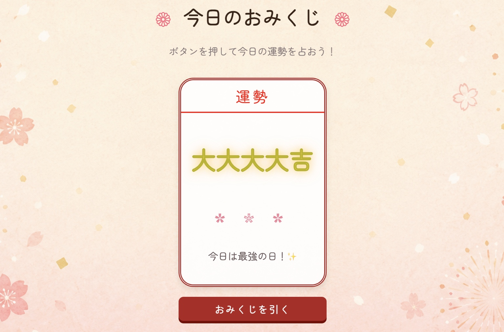

Practice
-

Baby-Care-Essentials
HTML / CSS / AOS / Bootstrap Icons
育児中の親向け架空サービスLPです。赤ちゃんが泣く前に知らせてくれる架空の商品をテーマに、悩みの提示から機能紹介、利用者の声、CTAまでの流れを意識して制作しました。
レスポンシブ対応とAOSによるスクロールアニメーションも実装しています。 -

Recipe-Diary-Practice
HTML / CSS
CodeJump様のデザインを元に模写コーディング。
Flexboxを使用したレイアウト構築と、レスポンシブ時の配置変更を意識して実装しました。 -

PHOTO BOOK Practice
HTML / CSS
CodeJump様のデザインを元に模写コーディング。
レイアウトだけでなく、ユーザーが操作しやすいUIを意識し、リンクをボタン化するなど視認性・操作性の改善を行いました。
また、余白や配置の調整により、情報が整理されて見やすい構成を意識しています。 -

Profile-Practice
HTML / CSS
CodeJump様のデザインを元に模写コーディング。
初めての模写で、模写は2回行いました。1度目はヒントを参考に作成し、2回目はデザインだけを参考にチャレンジしました。
掲載しているものは2回目の模写になります。
シンプルな構成の中で余白や文字の読みやすさを意識し、基本的なレイアウトを再現しました。 -

おみくじアプリ
HTML / CSS / JavaScript / Bootstrap Icons / canvas-confetti
和風デザインを意識して制作した、おみくじアプリです。
JavaScriptを使用してランダムで運勢を表示し、結果ごとに異なるメッセージが表示されるよう実装しました。また、「大大大大吉」の際には紙吹雪アニメーションが発生する演出を追加しています。
背景画像や配色、装飾にもこだわり、柔らかい和風テイストになるようデザインしました。
【実装内容】ランダム表示・結果ごとのコメント切り替え・紙吹雪アニメーション・日付の自動表示
About
2026年4月よりHTML/CSSを中心に学習を進めており、LPの模写やオリジナルサイト制作を通して、レスポンシブ対応やレイアウト構築のスキル習得に取り組んでおります。
以前は、看護師として病院で勤務しておりました。現在は保健師としてヘルスケアITベンチャーで、支社立ち上げフェーズから業務に携わっています。
業務を通してエンジニアの方々と関わる中で、Webアプリが形になっていく過程に魅力を感じ、自らも制作に携わりたいと考えるようになりました。
医療職として培った正確さや細部へのこだわりを活かし、丁寧なコーディングを行うことを大切にしています。